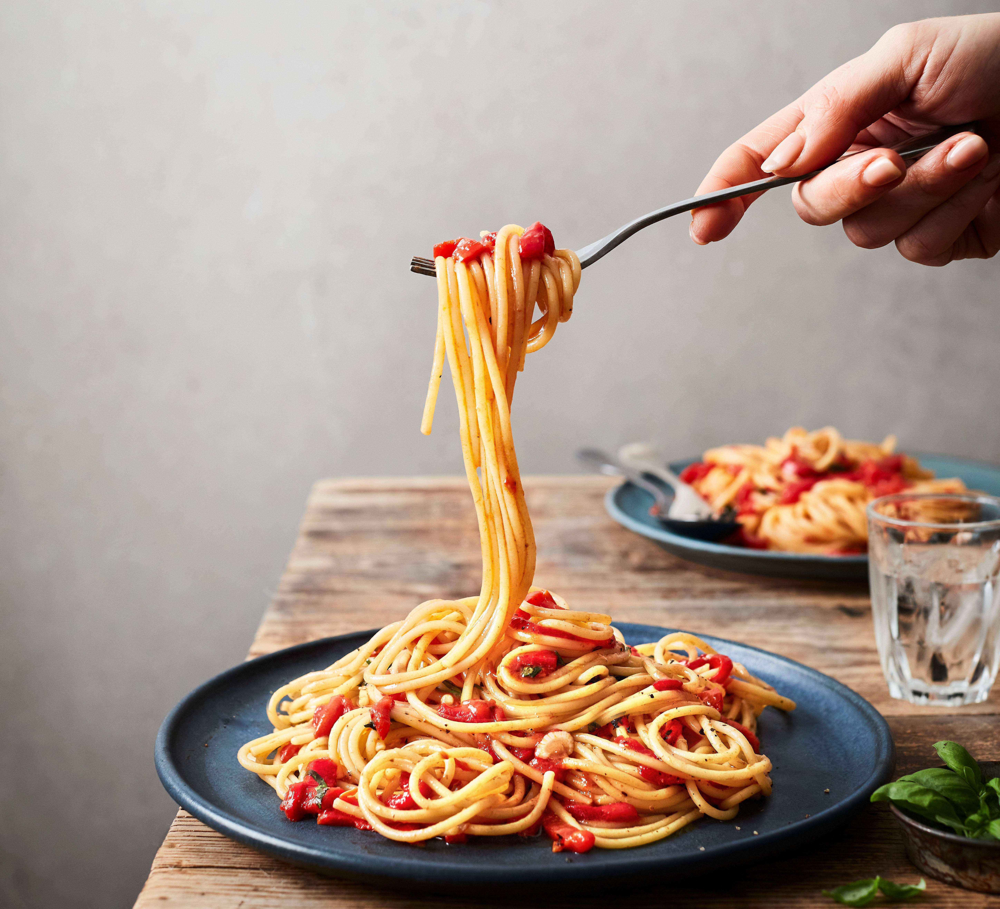

The Best Spaghetti You've Ever Had

Savor the flavors of this delicious spaghetti recipe that combines perfectly cooked pasta with a rich, homemade marinara sauce.
Infused with garlic, fresh basil, and ripe tomatoes, each bite is a burst of authentic Italian goodness.
Topped with a generous sprinkle of Parmesan cheese, this dish is both comforting and satisfying.
Perfect for any occasion, it’s sure to become a favorite at your dinner table!
Ingredients
- 4 tbsp extra virgin olive olive
- 6 cloves of garlic, minced
- 1 tsp dried oregano
- 1/4 cup fresh chopped basil
- 3 14oz cans San Marzano tomatos
- 1/2 tsp salt
- Shredded parmesan cheese
- 1 package spaghetti noodles of your choice
Steps
- Process chopped tomatoes in a food processor for a smoother texture or use crushed tomatoes or passata.
(Alternatively you can skip this step for a chunky spaghetti sauce.)
- In a large pot heat the olive oil over low heat, add minced garlic and chopped basil and stir for no longer than 10-20 seconds.
Do not let them burn or they will turn bitter.
- Add tomatoes, dried oregano and salt, bring to a boil
and let it simmer over very low heat for 7-10 minutes.
- Cook pasta according to instruciton
- Strain pasta
- In saucepan combine cooked noodles in pasta
- Serve and garnish with fresh chopped basil and parmesan